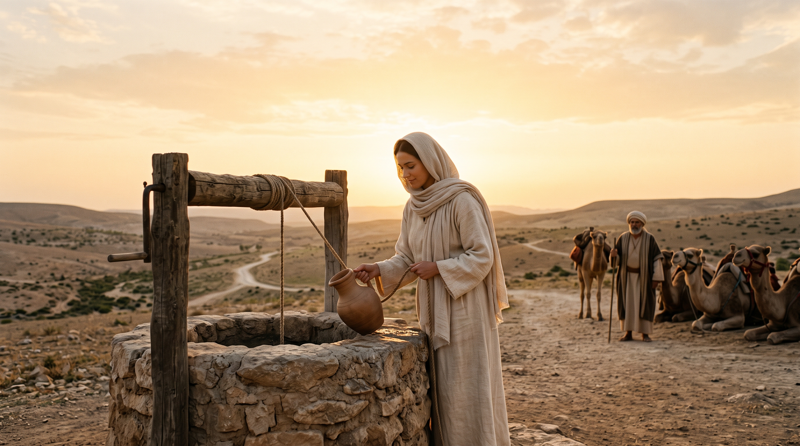

The Choosing Of A Bride (65-0429E)
Preached April 29, 1965

The Original Sermon
Read the complete sermon text, download the PDF or audio, or stream the original recording through Voice of God Recordings.
Visit Voice of God RecordingsThis sermon begins at a well in Genesis and closes with the Bride of the Lamb in Revelation. Brother Branham takes the calling of Rebekah for Isaac as a picture of Christ calling His own Bride: chosen by God, separated by the Word, and led by the Holy Spirit to meet the Bridegroom.
Sermon at a Glance
- Title: The Choosing Of A Bride
- Date: April 29, 1965
- Opening Scriptures: Genesis 24:12–14 and Revelation 21:9
- Central type: Rebekah’s calling to Isaac as a type of the Bride of Christ
The Choice Before Every Life
Brother Branham first establishes that life is full of choices. Men and women choose a path, make moral choices, choose where they will worship, and ultimately respond to God’s Word. The sermon places the greatest weight on that last choice: the eternal consequence of receiving or refusing the Truth when it is made known.
Elijah’s question on Mount Carmel provides the pattern: when God makes the issue plain, delay is not neutrality. The heart must answer. The Bride is not produced by accident, culture, or association; she comes by a response to the Word.
Rebekah at the Well
Genesis 24 supplies the central picture. Abraham sends his servant to find a bride for Isaac. The servant comes to the well in prayer, and Rebekah appears. Her willingness to draw water not only for the servant but also for his camels identifies her as the appointed woman.
In the sermon’s spiritual application, Abraham represents God the Father, Isaac represents Christ, the servant represents the Holy Spirit, and Rebekah represents the Bride. The Bride does not first see the Bridegroom face to face. She receives the witness, accepts the call, and begins the journey toward the One she has not yet seen.
The Bride Reflects the Bridegroom
A bride bears the character of the man to whom she is joined. Brother Branham applies that natural truth to Christ and His Church. Since Christ kept, fulfilled, and manifested the Word of God, His Bride must likewise be identified with the Word.
This is not merely an outward association with Christian language or religious activity. The union is one of life and character. The Bride is prepared by the Word, lives under the leadership of the Holy Spirit, and desires the things that please Christ.
The Holy Spirit Leads the Bride
The servant in Genesis 24 did not simply tell Rebekah about Isaac; he led her on the journey to Isaac. In the same way, the Holy Spirit leads the Church into all Truth. The purpose is not to form a people around human organization, but to bring a people into harmony with the Word and into readiness for Christ.
Rebekah’s response was simple and decisive: she was willing to go. That willingness is the heart of this type. The Bride hears the call, receives what has been provided for her, and leaves the old home to meet the Bridegroom.
For Believers
The question raised by this sermon is personal: What is the Word asking of the heart today? Rebekah did not have the entire journey mapped before her. She answered the call and trusted the servant sent to lead her. The Bride is made ready in the same way—by faith, obedience, and a settled willingness to follow where the Word leads.
Scriptures to Read
- Genesis 24
- John 14:26
- John 16:13
- Ephesians 5:25–27
- Revelation 19:7–8
- Revelation 21:9
Study Reflection
Read Genesis 24 slowly and trace Rebekah’s response from the well to her meeting with Isaac. Consider which part of her response best shows what it means to be ready for the Bridegroom.
Continue exploring this collection of studies from the sermons of William Branham.
← All Sermon Studies